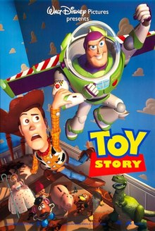

Woody, a good-hearted cowboy doll who belongs to a young boy named Andy, sees his position as Andy's favorite toy jeopardized when his mom buys him a Buzz Lightyear action figure. Even worse, the arrogant Buzz thinks he's a real spaceman on a mission to return to his home planet. When Andy's family moves to a new house, Woody and Buzz must escape the clutches of maladjusted neighbor Sid Phillips and reunite with their boy.Toy Story is about the 'secret life of toys' when people are not around. When Buzz Lightyear, a space-ranger, takes Woody's place as Andy's favorite toy, Woody doesn't like the situation and gets into a fight with Buzz. Accidentally Buzz falls out the window and Woody is accused by all the other toys of having killed him. He has to go out of the house to look for him so that they can both return to Andys room. But while on the outside they get into all kind of trouble while trying to get home..
Woody and the other toys have seemed limp and inanimate up to this point, but as soon as Andy leaves the room, Woody sits up and expresses surprise that the birthday party is today. He calls "Ok, everybody, the coast is clear," and the other toys come to life too. Woody calls a staff meeting and tells Slinky Dog to spread the word. Within a few minutes (during which Bo Peep makes a date with Woody for that evening), all the toys are assembled. Woody starts by reminding them all to find a moving buddy so they don't get lost when the Davis family moves to their new house, which will happen in a week. Then he tries to downplay the news that Andy's birthday party is happening today, but it causes a commotion as the toys know that Andy's actual birthday isn't till next week. Rex worries that someone will give Andy another dinosaur, and many of the toys have similar concerns. Woody points out that it makes sense to have the party before the move, then tries to calm them down. He's interrupted when Hamm (voice: John Ratzenberger) the piggybank, stationed near the window, announces that the guests are arriving. The toys rush to the window to see the presents the kids are bringing; the bigger boxes make them especially nervous. Hamm predicts "we're next month's garage sale fodder for sure." Woody finally says, "If I send out the troops, will you all calm down?"
Sending out the troops means that the little green plastic soldiers, led by Sarge (voice: R. Lee Ermey), lower the baby monitor to the first floor and hide with it in a potted plant, where they can observe the opening of the gifts and report back to the toys in Andy's room. At first, the presents seem nonthreatening — a lunchbox, bed sheets ("who invited that kid?" wonders Mr. Potato Head), a Battleship game. But Andy's mom pulls a surprise present from the closet. Andy's very excited about it, but before they hear what it is, Rex knocks the speaker off the table and the batteries fall out. Sarge warns that the kids are headed upstairs, but the toys barely have time to resume their previous positions before the stampede thunders in. One of the kids (Andy?) sweeps Woody off the bed, saying "make a space, this is where the spaceship lands!" They put something down where Woody was, then Andy's mom calls them back down to play games and suddenly the room is empty again. The toys creep out of their hiding places to see the new toy, pausing in surprise when Woody crawls out from under the bed. The new toy has taken Woody's place on the bed, which causes consternation. Woody reminds them that no one is being replaced, and they look up to see what's on the bed.
It's Buzz Lightyear (voice: Tim Allen), space ranger, Universe Protection unit. Buzz believes he's crash landed on a strange planet on the way to sector 12, and his ship (his box) is damaged. Woody welcomes Buzz to Andy's room and tries to explain that Buzz has landed in Woody's usual spot. The other toys climb up on the bed to meet Buzz and ask him about the buttons and gadgets on his space suit. They're impressed with Buzz's voice recordings — "a quality sound system" — not like Woody's pull-string-activated voice, which "sounds like a car ran over it." Buzz also has a laser ("a little light bulb that blinks," grumbles Woody), and wings. Buzz takes exception to being called a toy, and when Woody says he can't really fly, Buzz climbs the bedpost, shouts "to infinity and beyond!", and dives. He bounces off a rubber ball, does a loop-de-loop on the racetrack, and gets stuck for a few rotations on the toy plane tethered to the ceiling before flipping down and landing neatly back on the bed. All the toys are dazzled except Woody, who says "that wasn't flying, that was falling with style!".
Voiced by:Tom Hanks
Woody was created by directors and writers John Lasseter, Andrew Stanton, Pete Docter, and Joe Ranft. His facial features are based on the former Disney animator Tone Thyne. Woody was designed by Bud Luckey, and is based on John Lasseter's Casper pull-string doll he had as a kid, as well as the Howdy Doody puppets from the 1950s show.
Voiced by:Tim Allen
Buzz Lightyear is one of the main characters in the Disney/Pixar Toy Story franchise, voiced by Tim Allen. He is a superhero toy action figure based on the in-universe media franchise consisting of a blockbuster feature film and animated series, Space Ranger.
Voiced by:Don Rickles
Mr. Potato Head is a sarcastic, Brooklyn-accented doll based on the real-life Mr. Potato Head toy. His design allows him to detach parts from his body and he has a compartment on his lower back to store extra appendages. He retains control over his parts even if they are disconnected from his body.
Voiced by:Jim Varney
Slinky Dog is a toy dachshund with a metal Slinky for a body, who speaks in a gravelly southern accent. Slinky's head, feet, and a tail are plastic; he has a green collar. Slinky Dog was partially redesigned for the film by Pixar artist Bud Luckey to make him more appealing as an animated character.
Voiced by:Wallace Shawn
Rex is an excitable large, green, plastic Tyrannosaurus rex with a lot of anxiety from an inferiority complex ("I just don't think I could take that kind of rejection!") and he is afraid, he is not scary enough. Although Rex is a toy dinosaur, he dislikes confrontation and is sensitive in nature. He is among the largest of Andy's toys.
Voiced by:John Ratzenberger
Hamm is a wisecracking realist plastic piggy bank. He has a cork in his belly in place of a stopper. He and Mr. Potato Head are friends, and are seen in the first film playing a card game, and later Battleship, which Hamm always wins. Out of all the toys, he is shown to have the most knowledge of the outside world, often being familiar with various gadgets that are shown.
Voiced by:John Morris
Andy Davis is the former overarching protagonist of the films and the original owner of Woody, Buzz Lightyear and the other toys in the first three films. He lives with his mother and his sister Molly until the third film, when he goes to college after turning 17.